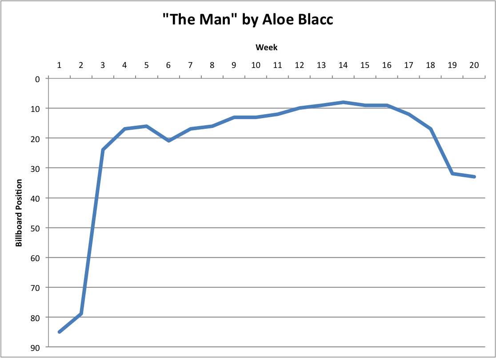
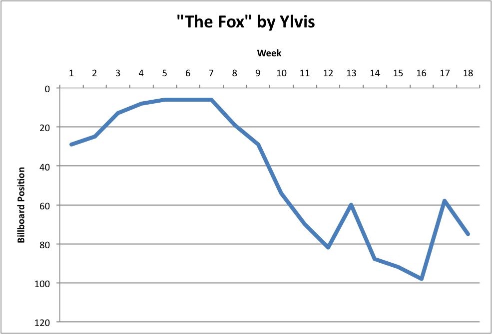

Midterm Report: 3/22/17
Introduction and Investigation:
The aim of our project is to investigate the factors that lead to the popularity of a given one-hit wonder. A one-hit wonder is defined as “an act that has won a position on [the] national, pop, Top 40 just once” by Billboard, which is the entity that is the music industry standard for measuring chart performance.
To investigate one-hit wonders, we scraped Billboard Hot 100 data from 2000 to the present day. We were able to scrape information such as song name, artist name, weekly song chart position, and song genre. We also combined out Billboard data with Spotify and LastFm data to help get the genre for the songs, since Billboard does not provide us with genre data. We stored our datafile which contained the name, artist, chart position and genre into a csv file.
There are various insights that we can glean from our data. First, we can look at the relative movement of chart position for a one-hit wonder and we can look at the number of weeks that a one-hit wonder stays in the Hot 100. Additionally, we can look at the popularity of various genres for a given year or time period. Finally, we can look at the total number of one-hit wonders per year. Thus, our dataset allows us to investigate a whole host of factors that could contribute to the popularity of a one-hit wonder.
Visualizations and Explinations:
One simple part of our data we wanted to visualize was the number of one hit wonders per year and see if it changed over time. The following graph shows how many one hit wonders occurred in a certain year. From the data we can see that the number of one hit wonders per year remains roughly similar, with an outlier in 2013. This is interesting in showing that one hit wonders have steadily occurred over the last 15 years.

One hypothesis that we wanted to investigate was what the chart movement of a one-hit wonder looks like. We hypothesized that a one-hit wonder would rapidly ascend the chart, have a sustained peak, and then quickly fall. We selected two one hit wonders that would test this hypothesis, though in the future we would like to observe many different one-hit wonders’ chart movement to get a clearer picture of what typical chart movement looks like.
“The Man” by Aloe Blacc supports the hypothesis. In this graph we can see the song start out fairly low in the charts, and then rapidly ascend into the top 20. The song then sustains a peak for more than 10 weeks until it rapidly falls.

“The Fox” by Ylvis does not support the hypothesis. Rather than see movement like “The Man”, “The Fox” enters the charts at a relatively high position and peaks for roughly 5 weeks before a rapid, but sustained decline. This behavior can be attributed to “The Fox” being a product of a viral music video, which is most likely responsible for the song entering the charts in such a high position, as it is likely that the song gained its viral popularity during a week. The long decline can also be attributed to the virality of the video dying out.

Thus, these two different one-hit wonders contain conflicting information about what a one-hit wonder’s typical movement is. This is something that we will continue to investigate as we dive deeper into our data.
Discussion of the Following:
a) What is hardest part of the project that you’ve encountered so far?
The hardest part of the project that we have encountered so far has been extracting the genre for each song. We scrapped all of our song data off our billboard 100, which gave us the song name, artist, and chart position. Billboard did not, however, have any genre data. To get the genre data which was a vital part of our initial inquiry we had to try various tactics. Our first approach was to use Last.fm to find the genre of each song. We decided to use Last.fm because of its accurate tags and differentiation between artist and specific song. For example if an artist is a “pop singer” but makes a rap song, Last.fm will pick up on this difference and return rap as the genre of the song. We encountered a few problems with Last.fm when the song we were searching for was not on Last.fm. This showed to be a problem as a significant number of songs did not return a genre. To get a more complete list of genres for our songs, we wrote a script that would search Spotify for genre data that Last.fm did not have. The Spotify tags were not as accurate as the Last.fm ones, but were effective in filling the gaps in our genre data.
Once we were able to access genre data for almost all of the songs in our dataset we ran into the problem of slight genre differentiation. We had hundreds of genre tags that were very similar to other ones but either differed in spelling (hip-hop and hip hop) or had other words after them (alternative …). In order to consolidate this list of genres so we could get a good sense of which ones were most popular at each time period, we created a general list of tags. In our data we assigned each song one of these tags depending on what its returned tag was. For example all songs with hip hop went into one tag, all songs with punk went into another one, all songs with pop went into another. This process whole process was cumbersome, but we were able to generate an accurate and concise list of genre tags for our songs.
b) What are your initial insights?
One hit wonders are unpredictable! Looking through various trends of one hit wonder songs over time their rise and fall in the charts are both rapid and casual. We observed the difference between one hit wonders that were popular songs vs one hit wonders that went viral. These results were interesting in the difference between the rapid rise of viral songs compared to the longer high chart score of quality songs. Overall one hit wonders ascended in the charts rapidly and fell out of the top 100 rapidly.
c) Are there any concrete results you can show at this point? If not, why not?
We have been able to set up our data so that we can extract basic information such as song chart movement, popular genres for a given chart, and the number of one-hit wonders per year. Thus, we have been able to create a file that has all this information, but so far we have not been able to apply machine learning techniques to further analyze the data. To look at some of the insights that we have gleaned from the information that we have compiled so far, see the above visualizations.
d) Going forward, what are the current biggest problems you’re facing?
Now that we have our data collected and cleaned our biggest problem going forward will be analyzing it. Determining the most popular genres over the course of time a one hit wonder was popular and insights into the effect a genre has on it could be a potential challenge.
e) Do you think you are on track with your project? If not, what parts do you need to dedicate more time to?
We believe that we are on track with our project. We are happy with the work we’ve done in collecting all the data we need and are in a good position to start analyzing it thoroughly and perform machine learning on it.
f) Given your initial exploration of the data, is it worth proceeding with your project, why?
Yes, given the initial exploration of our data it is worth proceeding with our idea. There are many interesting insights to be gained from one hit wonders. We are planning to focus on the effect that genres in a certain time period have on one hit wonders, but can easily pivot if needed because of the large amount of data and possibilities for exploration. We look forward to proceeding forward with our project and finding some awesome insights!
Return to Home Page